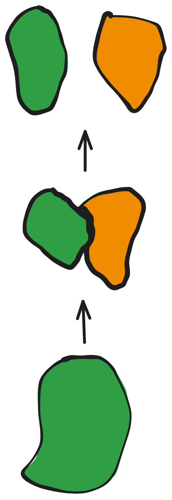
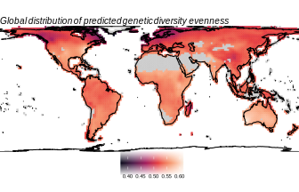

The influence of environmental change on genetic diversity across spatial and
taxonomic scales
Connor French, PhD Candidate
Pre-defense seminar, 2024-06-04
The Graduate Center
City University of New York


The Earth is constantly changing

Populations shrink or expand…
Fragment and reconnect…

Adapt or go extinct

Ectotherms are linked to their environments

A global perspective is necessary

Insects comprise over 93% of the planet’s described animal diversity

Some predictions follow those from vertebrates
Latitudinal diversity gradient 1
Human disturbance 2
Climate stability 3

I compiled the largest animal macrogenetic dataset to date

Global maps of insect genetic diversity evenness



Simulating these complex scenarios is difficult

space
Take spatial models of habitat suitability (i.e. SDMs) projected through time
prime
Simulate the genealogy of a sample of DNA sequences backwards in time with

The spaceprime website (will) contain
- Documentation of all functions
- A quickstart guide and worked example(s)


- A guide for R users
- FAQ and other resources